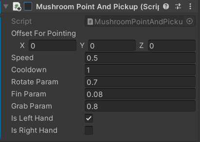

Hand Rehab Game for Sahlgrenska hospital
No 1 About Project
We developed the game in Unity 3D and the game comprises of
6 levels. We used a Leap motion controller to track the hand
movements of the player.
I was the Lead programmer for
this Serious game.
As a part of our Master’s course we were asked to develop a Serious game and we chose to develop a Hand rehabilitation game in partnership with Sahlgrenska hospital in Gothenburg. The goal of the game is to collect mushrooms and complete the challenges given. The challenges may differ for each level.

No 2 The Process
The project production time was 4 months and it was done as a part of our course. We were a team of 5 and I was the Lead Programmer. I actively took part in game design as well.
There were alot of things I took care, but will highlight the top things,
Programming
-
Created a GameManager Script to handle all the variables
that are necessary for the game. This script acts as a
connector script which gets accessed by all other scripts.
All scripts should search variables in GameManager for executing functionality.
- All the levels and code is handled only in GameManager and no extra scripts were created for levels. (Dynamic coding)
-
Created A single script for both right and left hand and if we want to change the dominant hand
it can be done with just a click of a button.

-
Split and reused the code for hand functions for three different scenarios and it is handled by disabling and enabling the script.
Game Design
-
There are 4 trigger boxes that can be found under the Leap Motion Hand GameObject.
- Got within grab range(Object In Range) - This is used to trigger the camera movement closer to the hands since the mushrooms are within the grab range and the player enters an examination mode where he can accept or reject the mushroom by putting it in the basket or throwing it away.
- Out box(Got Out) - When the mushroom is thrown out after it got within the grab range then it triggers the Out box when exiting. This trigger moves the camera back to the original position which is exploration.
- Hand bounds - This is to indicate that the hands are going out of the leap motions range of detection
- Increased elevation - This is created so that the player can easily grab the mushroom when it is near the player.
- Created a separate camera to overlay the Aim Icon to display over the scene, by Masking all the other objects and showing only the objects with tag UI 3D.
No 3 Roles
- Game programmer
- Gameplay programmer
- R&D on LeapMotion Plugin
- Game Design
No 4 Requirements
- PC
- Leap Motion Controller
Requirments necessary to play the game
No 5 GIt Link:
No 6 More Projects
-
 Mars Marine
Mars Marine
-
 ARBasketball
ARBasketball
-
 Ninja Game
Ninja Game